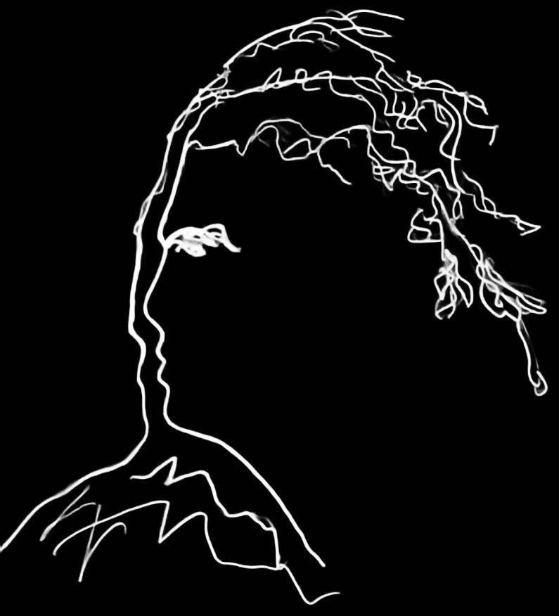

Примеры(150+) в этой ветке основаны на r95 и
соответствуют третьему изданию книги «Изучение Three.js».
The (150+) examples in this branch are based on r95 and
correspond to the third edition of "Learning Three.js"
Глава 1. Создание первой 3D-сцены с помощью библиотеки Three.js |
Chapter 1: Creating Your First 3D Scene with Three.js
Глава 2. Работа с базовыми компонентами, составляющими Three.js-сцену |
Chapter 2: Working with the Basic Components That Make Up a Three.js Scene
Глава 3. Работа с различными источниками света, доступными в Three.js |
Chapter 3: Working with the Different Light Sources Available in Three.js
Глава 4. Работа с материалами из библиотеки Three.js |
Chapter 4: Working with the Three.js Materials
Глава 5. Изучение работы с геометриями |
Chapter 5: Learning to Work with Geometries
Глава 6. Использование сложных геометрий и бинарных операций |
Chapter 6: Using Advanced Geometries and Binary Operations
Глава 7. Частицы и система частиц |
Chapter 7: Particles and the Particle System
Глава 8. Создание и загрузка сложных мешей и геометрий |
Chapter 8: Creating and Loading Advanced Meshes and Geometries
Глава 9. Анимации и перемещение камеры |
Chapter 9: Animations and Moving the Camera
Глава 10. Загрузка текстур и работа с ними |
Chapter 10: Loading and Working with Textures
Глава 11. Нестандартные шейдеры и постобработка рендеринга |
Chapter 11: Custom Shaders and Render Post Processing
Глава 12. Добавление физики к сцене, с помощью библиотеки Physijs |
Chapter 12: Adding Physics to Your Scene with Physijs
Глава 1. Создание первой 3D-сцены с помощью библиотеки Three.js |
Chapter 1: Creating Your First 3D Scene with Three.js
01.01 - Базовый скелет |
01.01 - Basic skeleton
01.02 - Первая сцена |
01.02 - First Scene
01.03 - Материалы и свет |
01.03 - Materials and light
01.04 - Материалы, свет и анимация |
01.04 - Materials, light and animation
01.05 - Управление графическим интерфейсом пользователя |
01.05 - Control gui
01.06 - Изменение размера экрана |
01.06 - Screen size change
Глава 2. Работа с базовыми компонентами, составляющими Three.js-сцену |
Chapter 2: Working with the Basic Components That Make Up a Three.js Scene
02.01 - Базовая сцена |
02.01 - Basic Scene
02.02 - Туманная сцена |
02.02 - Foggy Scene
02.03 - Переопределение материала |
02.03 - Override Material
02.04 - Геометрии |
02.04 - Geometries
02.05 - Нестандартная геометрия |
02.05 - Custom geometry
02.06 - Свойства меша |
02.06 - Mesh Properties
02.07 - Камеры |
02.07 - Cameras
02.08 - Камеры смотрят на... |
02.08 - Cameras-lookat
Глава 3. Работа с различными источниками света, доступными в Three.js |
Chapter 3: Working with the Different Light Sources Available in Three.js
03.01 - Рассеянный свет |
03.01 - Ambient Light
03.03 - Прожекторный свет |
03.03 - Spot Light
03.02 - Точечный свет |
03.02 - Point Light
03.04 - Направленный свет |
03.04 - Directional Light
03.05 - Свет полушария |
03.05 - Hemisphere Light
03.06 - Свет области |
03.06 - Area Light
03.07 - Отблеск линзы |
03.07 - Lensflarest
Глава 4. Работа с материалами из библиотеки Three.js |
Chapter 4: Working with the Three.js Materials
04.01 - Базовый материал меша |
04.01 - MeshBasicMaterial
04.02 - Материал глубины |
04.02 - Depth Material
04.03 - Комбинированный материал |
04.03 - Combined Material
04.04 - Материал нормалей меша |
04.04 - Mesh normal material
04.05 - Материал граней меша |
04.05 - Mesh face material
04.06 - Материал меша, с освещением по Ламберу |
04.06 - Mesh Lambert material
04.07 - Материал меша, с освещением по Фонгу |
04.07 - Mesh Phong material
04.08 - Toon-материал меша |
04.08 - Mesh Toon material
04.09 - Стандартный материал меша |
04.09 - Mesh Standard material
04.10 - Физический материал меша |
04.10 - Mesh Physical material
04.11 - Материал c собственными шейдерами |
04.11 - Shader material - http://glsl.heroku.com/
04.12 - Материал базовой линии |
04.12 - Linematerial
04.13 - Материал линии штриха |
04.13 - Linematerial Dashed
Глава 5. Изучение работы с геометриями |
Chapter 5: Learning to Work with Geometries
05.01 - Базовая 2D-геометрия - Плоскость |
05.01 - Basic 2D geometries - Plane
05.02 - Базовая 2D-геометрия - Круг |
05.02 - Basic 2D geometries - Circle
05.03 - Базовая 2D-геометрия - Кольцо |
05.03 - Basic 2D geometries - Ring
05.04 - Базовая 2D-геометрия - Форма |
05.04 - Basic 2D geometries - Shape
05.05 - Базовая 3D-геометрия - Куб |
05.05 - Basic 3D geometries - Cube
05.06 - Базовая 3D-геометрия - Сфера |
05.06 - Basic 3D geometries - Sphere
05.07 - Базовая 3D-геометрия - Цилиндр |
05.07 - Basic 3D geometries - Cylinder
05.08 - Базовая 3D-геометрия - Конус |
05.08 - Basic 3D geometries - Cone
05.09 - Базовая 3D-геометрия - Тор |
05.09 - Basic 3D geometries - Torus
05.10 - Базовая 3D-геометрия - Торускнот |
05.10 - Basic 3D geometries - Torusknot
05.11 - Базовая 3D-геометрия - Многогранник |
05.11 - Basic 3D geometries - Polyhedron
Глава 6. Использование сложных геометрий и бинарных операций |
Chapter 6: Using Advanced Geometries and Binary Operations
06.01 - Сложная 3D-геометрия - Выпуклая оболочка |
06.01 - Advanced 3D geometries - Convex Hull
06.02 - Сложная 3D-геометрия - Выточенная оболочка |
06.02 - Advanced 3D geometries - Lathe
06.03 - Выдавливание геометрии |
06.03 - Extrude Geometry
06.04 - Выдавливание геометрии трубы |
06.04 - Extrude TubeGeometry
06.05 - Выдавливание SVG |
06.05 - Extrude SVG
06.06 - Параметрическая геометрия |
06.06 - Parametric geometries
06.07 - Геометрия текста |
06.07 - Text geometry
06.08 - Бинарные операции |
06.08 - Binary operations
Глава 7. Частицы и система частиц |
Chapter 7: Particles and the Particle System
07.01 - Спрайты |
07.01 - Sprites
07.02 - Точки |
07.02 - Points
07.03 - Облако базовых точек |
07.03 - Basic Point Cloud
07.04 - Частицы - Текстура на базе холста |
07.04 - Particles - Canvas based texture
07.05 - Точки - Текстура на базе холста - WebGL |
07.05 - Points - Canvas based texture - WebGL
07.04 - Частицы - Текстура на базе холста |
07.04 - Particles - Canvas based texture
07.07 - Частицы - Дождливая сцена |
07.07 - Particles - Rainy scene
07.08 - Частицы - Снежная сцена |
07.08 - Particles - Snowy scene
07.09 - Спрайты |
07.09 - Sprites
07.10 - Спрайты в 3D |
07.10 - Sprites in 3D
07.11 - Торускнот 3D модель(как частицы) |
07.11 - 3D Torusknot
Глава 8. Создание и загрузка сложных мешей и геометрий |
Chapter 8: Creating and Loading Advanced Meshes and Geometries
08.01 - Группирование |
08.01 - Grouping
08.02 - Слияние объектов |
08.02 - Merge objects
08.03 - Сохранить и Загрузить |
08.03 - Save and Load
08.04 - Загрузить и сохранить сцену |
08.04 - Load and save scene
08.05 - Загрузить blender-модель |
08.05 - Load blender model
08.06 - Загрузить OBJ-модель |
08.06 - Load OBJ model
08.07 - Загрузить OBJ и MTL |
08.07 - Load OBJ and MTL
08.08 - Загрузить collada-модель |
08.08 - Load collada model
08.09 - Загрузить stl-модель |
08.09 - Load stl model
08.10 - Загрузить ctm-модель |
08.10 - Load ctm model
08.11 - Загрузить vtk-модель |
08.11 - Load vtk model
08.12 - Загрузить pdb-модель |
08.12 - Load pdb model
08.13 - Загрузить ply-модель |
08.13 - Load ply model
08.14 - Загрузить awd-модель |
08.14 - Load awd model
08.15 - Загрузить assimpl-модель |
08.15 - Load assimp model
08.16 - Загрузить vrml-модель |
08.16 - Load vrml model
08.17 - Загрузить babylon-модель |
08.17 - Load babylon model
08.18 - Загрузить TDS-модель |
08.18 - Load TDS model
08.19 - Загрузить 3FM-модель |
08.19 - Load 3FM model
08.20 - Загрузить AMF-модель |
08.20 - Load AMF model
08.21 - Загрузить Play Canvas-модель |
08.21 - Load Play Canvas model
08.22 - Загрузить Draco-модель |
08.22 - Load Draco model
08.23 - Загрузить PRWM-модель |
08.23 - Load PRWM model
08.24 - Загрузить GCode-модель |
08.24 - Load GCode model
08.25 - Загрузить nrrd-модель |
08.25 - Load nrrd model
08.26 - Загрузить svg-модель |
08.26 - Load svg model
Глава 9. Анимации и перемещение камеры |
Chapter 9: Animations and Moving the Camera
09.01 - Простая анимация |
09.01 - Simple animation
09.02 - Выбор объектов |
09.02 - Selecting objects
09.03 - Загрузить ply-модель |
09.03 - Load ply model
09.04 - Контролы с шаровым манипулятором |
09.04 - Trackball controls
09.05 - Контролы полетом |
09.05 - Fly controls
09.06 - Контролы от первого лица |
09.06 - FPS controls
09.07 - Контролы орбитой |
09.07 - Orbit controls
09.08 - Цели морфа |
09.08 - Morph targets
09.09 - Ручные цели морфа |
09.09 - Manual morph targets
09.10 - Кости вручную |
09.10 - Bones manually
09.11 - Анимация из Blender-модели |
09.11 - Animation from Blender
09.12 - Анимация из Collada-модели |
09.12 - Animation from Collada
09.13 - Анимация из MD2-модели
09.13 - Animation from MD2
09.14 - Загрузчик gltf-файла |
09.14 - gltf loader
09.15 - Анимация из FBX-модели |
09.15 - Animation from FBX
09.16 - Анимация из x-модели |
09.16 - Animation from x
09.17 - Анимация из BVH-модели |
09.11 - Animation from BVH
09.18 - Анимация из SEA-модели |
09.18 - Animation from SEA
Глава 10. Загрузка текстур и работа с ними |
Chapter 10: Loading and Working with Textures
10.01 - Базовые текстуры |
10.01 - Basic Textures
10.01 - Базовые текстуры |
10.01 - Basic Textures
10.02 - Базовые текстуры |
10.02 - Basic Textures
10.03 - Базовые PVR-текстуры |
10.03 - Basic Textures PVR
10.04 - Базовые TGA-текстуры |
10.04 - Basic Textures TGA
10.05 - KTX-текстуры |
10.05 - KTX Textures
10.06 - EXR-текстуры |
10.06 - EXR Textures
10.07 - HDR/RGBE-текстуры |
10.07 - HDR/RGBE Textures
10.08 - Карта рельефа |
10.08 - Bump map
10.09 - Карта нормалей |
10.09 - Normal map
10.10 - Карта смещения |
10.10 - Displacement map
10.11 - Окружающая карта затенения |
10.11 - Ambient occlusion map
10.12 - Карта Света |
10.12 - Light map
10.14 - Металличность и шероховатость |
10.14 - Metalness and Roughness
10.14 - Альфа-карта |
10.14 - Alpha map
10.15 -Эмиссионная карта |
10.15 - Emissive
10.16 - Зеркальная карта |
10.16 - Specular
10.17 - Статичная карта окружения |
10.17 - Envmap static
10.17 - Динамичная карта окружения |
10.17 - Envmap dynamic
10.19 - UV-наложение |
10.19 - UV Mapping
10.20 - UV-наложение ручное |
10.20 - UV Mapping Manual
10.21 - Повторить наложение |
10.21 - Repeat wrapping
10.22 - Текстура холста |
10.22 - Canvas Texture
10.22 - Рельеф текстура холста |
10.22 - Bump map from Canvas
10.24 - Видео текстура |
10.24 - Video texture
Глава 11. Нестандартные шейдеры и постобработка рендеринга |
Chapter 11: Custom Shaders and Render Post Processing
11.01 - Композитор базового эффекта |
11.01 - Basic Effect Composer
11.02 - Эффекты простого прохода - 1 |
11.02 - Simple Pass Effects - 1
11.03 - Эффекты простого прохода - 2 |
11.03 - Simple Pass Effects - 2
11.04 - Маски постобработки |
11.04 - Post processing masks
11.05 - Бокех |
11.05 - Bokeh
11.06 - Окружающее затенение |
11.06 - Ambient Occlusion
11.07 - Проход Простого шейдера |
11.07 - Shader pass simple
11.08 - Проходы Размытия |
11.08 - Blur passes
11.09 - Композитор базового эффекта - Проход Нестандартного шейдера |
11.09 - Basic Effect Composer
11.103 - Маски постобработки |
11.103 - Post processing masks
11.104 - Проход Простого шейдера |
11.104 - Shader Pass simple
11.105 - Проход шейдера Размытия |
11.105 - Shader Pass blur
11.106- Проход Продвинутого шейдера |
11.106 - Advanced
11.107 - Проход Нестандартного шейдера |
11.107 - custom shaderpass
Глава 12. Добавление физики к сцене, с помощью библиотеки Physijs |
Chapter 12: Adding Physics to Your Scene with Physijs
12.01 - Домино |
12.01 - Dominos
12.02 - Материал |
12.02 - Material
12.03 - Формы |
12.03 - Shapes
12.04 - Ограничение точки |
12.04 - PointConstraint
12.05 - Ползунки и стержни |
12.05 - Sliders and hinges
12.06 - Ограничение глубины резкости |
12.06 - DOF Constraint
12.07 - Аудио |
12.07 - Audio
Jos Dirksen(Джос Дирксен) !!!!!!! - автор книг:
Джос Дирксен. Изучение Three.js: JavaScript 3D-библиотека для WebGL. Создайте и анимируйте
ошеломляющую 3D-графику, используя JavaScript- библиотеку Three.js, с открытым исходным кодом.
(Jos Dirksen. Learning Three.js: The JavaScript 3D Library for WebGL.
Create and animate stunning 3D graphics using the open source Three.js JavaScript library.,
ISBN 978-1-78216-628-3, Copyright © 2013 Packt Publishing)
Шестьдесят(и более) штрихов о прочитанных(переведённых) книгах. Штрих сорок седьмой. 2024 год.
Джос Дирксен. Изучение Three.js: JavaScript 3D-библиотека для WebGL.
Джос Дирксен. Книга рецептов: Библиотека Three.js. Более чем 80 советов, решений и рецептов,
позволяющих создавать самые ошеломляющие визуализации и 3D-сцены, с помощью библиотеки Three.js.
(Jos Dirksen. Three.js Cookbook. Over 80 shortcuts, solutions, and recipes that allow you
to create the most stunning visualizations and 3D scenes using the Three.js library.,
ISBN 978-1-78398-118-2, Copyright © 2015 Packt Publishing)
Шестьдесят(и более) штрихов о прочитанных(переведённых) книгах. Штрих сорок девятый. 2024 год.
Джос Дирксен. Книга рецептов: Библиотека Three.js.
Джос Дирксен. Эссенция JavaScript-библиотеки трехмерной высокоуровневой графики Three.js.
Создайте и анимируйте красивую 3D-графику с помощью этого краткого учебника.
(Jos Dirksen. Three.js Essentials. Create and animate beautiful 3D graphics with this fast-paced tutorial.,
ISBN 978-1-78398-086-4, Copyright © 2014 Packt Publishing)
Шестьдесят(и более) штрихов о прочитанных(переведённых) книгах. Штрих сорок восьмой. 2024 год.
Джос Дирксен. Эссенция JavaScript-библиотеки трехмерной высокоуровневой графики Three.js.